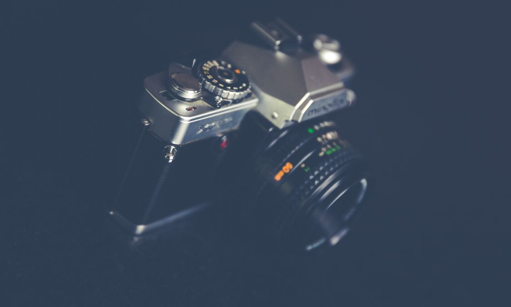
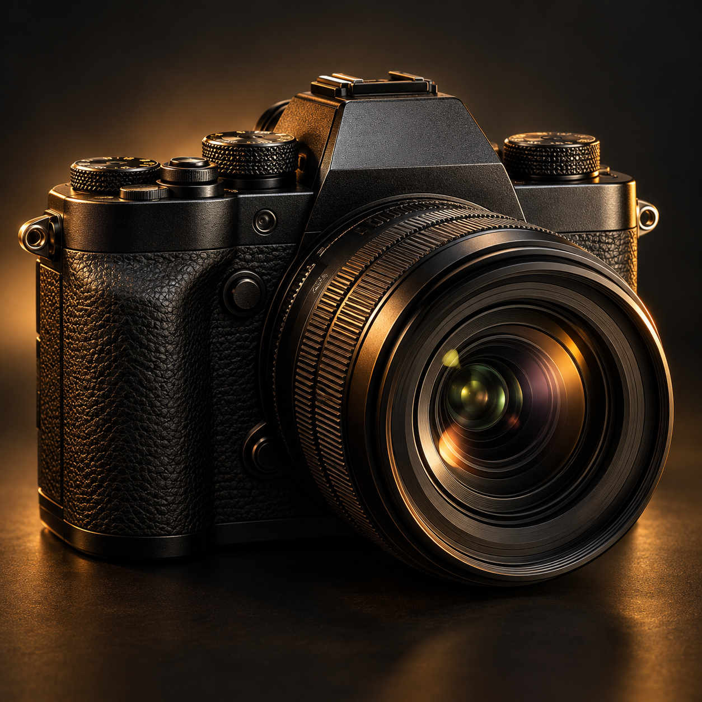

카메라 셔터를 누르면 사진은 어떻게 찍힐까 [굳이구지]
직접 찍고 조리개·셔터의 작동을 살펴보는 카메라 체험

필름 카메라와 렌즈. 사진의 밝기는 렌즈를 통과하는 빛의 양과 빛을 받아들이는 시간 등에 따라 달라진다. 체험 속 모형과는 다른 자료사진이다. (사진=Markus Spiske/Pexels)[서울=뉴시스] 안재현 기자 = “카메라는 카메라 없이 보는 법을 가르쳐 주는 도구다.”
미국 사진가 도로시아 랭의 말이다. 같은 장면도 빛을 얼마나, 얼마나 오래 받아들이느냐에 따라 다른 사진이 된다. 지나가는 사람의 모습이 또렷하게 멈추기도 하고, 움직인 자리를 따라 길게 번지기도 한다.

카메라와 렌즈를 표현한 이미지로, 실제 카메라의 구조와는 차이가 있다. 해당 이미지는 기사의 이해를 돕기 위해 AI 생성 후 가공 및 편집함. [그래픽=뉴시스]그 차이를 만드는 두 장치가 조리개와 셔터다. 조리개는 렌즈를 통과하는 빛의 양을 조절한다. f/2.8, f/5.6 같은 숫자로 표시하는데, 같은 초점거리에서 숫자가 커질수록 빛이 들어오는 구멍은 작아진다.
셔터 속도는 빛을 받아들이는 시간과 관계있다. 다른 조건이 같다면 1/30초는 1/1000초보다 더 오래 빛을 받는다. 그동안 피사체가 움직이면 사진에 움직임의 흔적이 남을 수 있다. 짧은 노출은 빠른 움직임을 멈춰 담는 데 유리하다.
사진의 밝기가 같다고 찍히는 모습까지 같은 것은 아니다. 조리개를 넓히는 대신 노출 시간을 줄여 비슷한 밝기를 얻더라도, 움직임이 번지는 정도나 초점이 맞아 보이는 범위는 달라질 수 있다.
비주얼 뉴시스의 ‘안재현의 굳이구지’ 카메라편에서는 화면 속 움직이는 피사체를 직접 찍어본다. 조리개와 셔터 속도를 바꾸면 가상 사진의 밝기와 움직임의 흔적이 달라진다. 휴대전화의 카메라를 켜거나 촬영 권한을 허용할 필요는 없다.
이어 ‘파헤쳐보기’를 누르면 방금 촬영한 설정을 바탕으로 조리개와 기계식 셔터의 역할을 살펴볼 수 있다. 조리개 날개 사이의 구멍을 바꾸고, 두 막 사이의 좁은 틈이 이동하는 고속 셔터의 작동도 느리게 관찰한다. 이 셔터 모형은 센서 앞에서 막이 움직이는 포컬플레인 방식으로, 모든 카메라의 셔터가 같은 구조인 것은 아니다.
체험은 촬영 원리를 비교하는 가상 모형이다. 실제 렌즈의 초점과 심도, 센서의 색 표현이나 노이즈까지 재현하지는 않는다. 셔터 한 번을 누르는 동안 카메라 안에서 어떤 일이 일어나는지 직접 확인할 수 있다.
◆ 비주얼 뉴시스에서 사진을 직접 찍고 카메라 안쪽의 움직임을 살펴보세요. https://visual.newsis.com/goodeasy/camera/
크리에이티브 디렉터 = 안재현